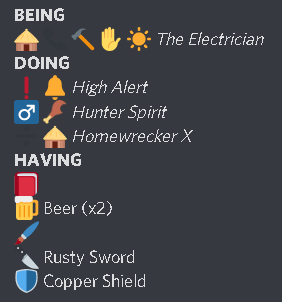
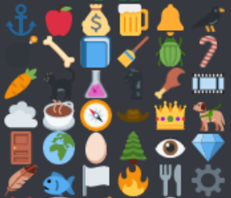
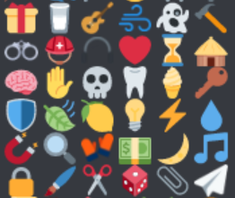
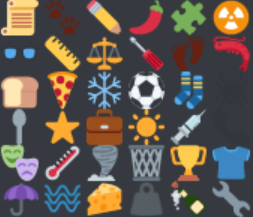
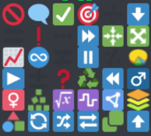

v0.1
Shuffle Bird - Questionable Modification to a game of being and doing
by
I strongly suggest reading and comprehending the original document before, as we wont be going over what each mechanics used to be.
Why ?
is quite brilliant, as someone who's been in the TTRPG scene for a couple years or more, something that abstracts the tedious number-crunching and focus purely on imagination was very refreshing.
However, the current ruleset lend itself to leaving too little power to the players. I wanted to empower the players more with this homebrew variant of . I hope anyone that reads this enjoys this change.
Temporary Rules
The rules of is intentionally left minimal to allow for extra mechanics to be added for each campaign. various rules could be introduced and applied on the go per GM's vision of the campaign.
Modifying
Like the abstract-ness of the campaign, the rules of the game is subject to different interpretation and application. feel free to add, remove and modify various mechanics to your team's content.
Character Creation
BEING
Honestly, what counts as a BEING symbol and how much narrative purpose it serves confused me and the playtest group a lot. so: In by how interpret the words of , BEING symbols represent who you are. It could be your character's job, their personality traits, backgrounds, even their species and specialties. This *does* mean that you may get special abilities (for example, a bird-man would be allowed to fly.)
Here's a modification, In the case of abilities gotten from a BEING symbol, no rolls are required to perform an action that affects you and only you. to carry someone with you, or to attack someone with your power, et cetera, you'd have to make a test. You'd have an advantage already since one of your BEING symbol is guaranteed to be useful.
additionally, In , you have the option to have a single BEING symbol of your choice regardless of rolling. This symbol could be the first or the last one, and it could even be one not in the table.
When adding a custom symbol, make sure that they're congruent with the rest of BEING symbols. preferrably something that can be explained with 2 preexisting symbols. for example, could be explained through or ... something like that.
You will still have to roll the remaining 4 BEING symbols, btw.
DOING
DOING traits are special traits your character possesses that are outside your BEING. it could be a superpower, a special gadget, world is your oyster with your DOING traits.
However, one thing that confused me was that it only gives narrative permission in , where trying to disguise yourself with your DISGUISE-KIT is no more effective than others trying to disguise with whatever they had lying around unless the GM decides you that you don't need to roll... or something of that nature. It didn't sit right with me that characters special properties don't matter as much.
To remedy this, will grant you an extra die when rolling using the DOING trait. think of the BEING symbol in the DOING trait taking into effect. this means you can trigger the DOING without having any appropriate BEING symbol, although to a low success rate. in addition, just like the abilities from BEING, abilities that only affect you can be triggered without a roll.
HAVING
HAVING describes your inventory, and will be filled out as the game goes on. there will be different kinds of items you may have in your HAVING, edges, items, and optionally a temporary DOING trait. edges are generated when you test and get a double, see description below. Items on the other hand, are things you pick up from the campaign, these items are more discrete than edges and usually named. They could even be important to the quest.
Items are distinguished from edges by having the name of the item written next to it.
Here is an example of a character bio in campaign.
Tests
Testing
General rules about tests and cooperative tests remain the same, aside from the fact that you can help with one of your DOING as well as your BEING. in which case the BEING symbol attached to your selected DOING trait is used.
I think it would be funnier if some associations that are a stretch are accepted. even a weak association can get a pass if they can solidly point out the correlations.
Edges and Items
in , these would be the closest you'd get to a dice modifier. you may be given an edge or an item as the campaign progresses. an Item may represent something more external while an edge may represent something more internal and mental, but also they could represent something different altogether. Edges have more uses than items and therefore are considered greater reward.
edges are kept nameless so it can be used in various other situations as BEING symbols do. On the other hand, Items can only be tapped when it makes sense for that item to do so.
Fallout
as offers players more dice in average compared to , fallouts should be more impactful. Fallouts scale with how impactful a test that incurred it is, and how narratively fitting it is. For example, trying to pick a lock, a fallout would make the lock break, or alert the guards. or anything the GM can come up with, really.
UNBEING and UNDOING
When incurring minor fallout, you can choose one of the edges and items tapped to offset the effect. when no edges or items are tapped, any edge can be sacrificed randomly to mitigate it as well. note that Items cannot offset random fallouts, only ones where it is tapped.
When incurring major fallout, all edges and items tapped will be broken on top of the GM-determined fallout, unless an UNDOING offsets the effect.
Making a Campaign
This section is dedicated to GMs that also want to run a game of .
NPCs and UNBEING
The thing about running a game is that players must feel like they're controlling the narrative, I mean of course you're the one that's constructing the story and the world around them, but they should determine their own place and fate in the story. While you can, I strongly advice against suffering UNBEING for NPCs.
Abstract NPCs
Imagine NPCs where their BEING trait is pulled from a DOING or even a Fallout table... ooh... inhuman and interesting...
Location-based Advantage
One optional rule a GM could impose could be assigning a BEING symbol to a location, where everyone (even the enemies!) can use the symbol to aid in making tests. note that you cannot use this symbol without having another symbol of your own.
TL;DR
Every abilities does not need a roll when you and only you are affected
DOING traits give 1 extra dice when using it for tests
physical items you've looted becomes a named Items that are different from edges, where they can only be tapped in the specific circumstance where it could be used.
in contrast, Edges are not named and can be tapped in every situations related to the symbol, as well as used to offset every minor fallback.
There could be new, temporary mechanics based on the campaign's settings.
Emoji Equivalents
BEING symbol table A
BEING symbol table B
BEING symbol table C
DOING symbol table
Fallout and Format table